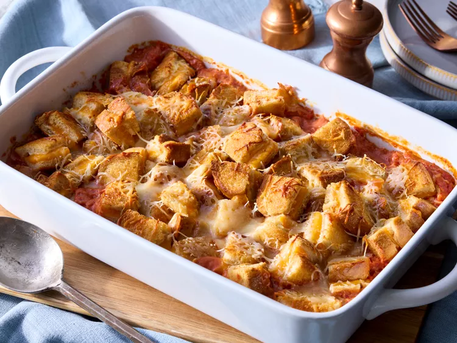

Tomato Soup and Grilled Cheese Casserole

A cozy, comforting casserole that combines creamy tomato soup with layers of melty grilled cheese.
This tomato soup and grilled cheese casserole captures the nostalgic flavor of the classic Campbell's tomato soup paired with gooey grilled cheese. It's a cozy, hearty twist on a childhood favorite that brings warmth and comfort in every bite.
Chunks of buttery grilled cheese are baked right into the soup, turning golden and melty as they soak up the rich tomato flavor. It's simple, satisfying, and perfect for a cozy lunch or easy weeknight dinner.
Ingredients
- 12 (½-inch thick) slices sourdough bread
- 1/4 cup butter, softened, divided
- 3 ounces cream cheese, softened
- 12 slices pre-sliced Cheddar cheese
- 2 (10.5 ounce) cans condensed tomato soup (such as Campbell's)
- 1 cup tomato juice
- 2 large eggs
- 1 teaspoon Italian seasoning
- 1/2 teaspoon garlic powder
- 1 Roma tomato, seeded and chopped into ½-inch pieces
Steps
- Gather all ingredients.
- Preheat the oven to 450 degrees F (230 degrees C). Grease a 9x13-inch baking dish.
- Spread 6 slices of bread with 2 tablespoons butter on one side.
- Lay buttered slices of bread, butter side down, on an extra large baking sheet.
- Spread bread slices evenly with cream cheese.
- Top each bread slice with 2 slices of Cheddar cheese
- Top cheese with remaining bread slices.
- Spread tops of bread slices with 2 tablespoons butter.
- Bake sandwiches for 12 to 14 minutes, flipping once, until cheese is melted.
Let sandwiches cool at least 15 minutes. Reduce oven temperature to 350 degrees F (175 degrees C).
- Meanwhile, prepare soup mixture. Whisk together tomato soup, tomato juice, eggs,
Italian seasoning, and garlic powder in a bowl. Stir in chopped tomato.
- Cut toasted sandwiches into 1-inch cubes.
- Pour soup mixture into prepared dish.
- Place cubes evenly over soup mixture in dish; pressing slightly to submerge in soup mixture.
- Sprinkle with shredded Italian blend cheese.
- Bake until heated through, golden brown, and cheese is melted, 25 to 30 minutes.
Return to Top
Go to Home